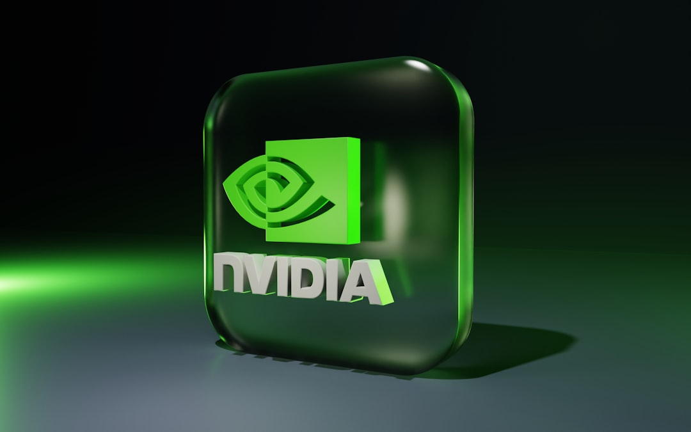
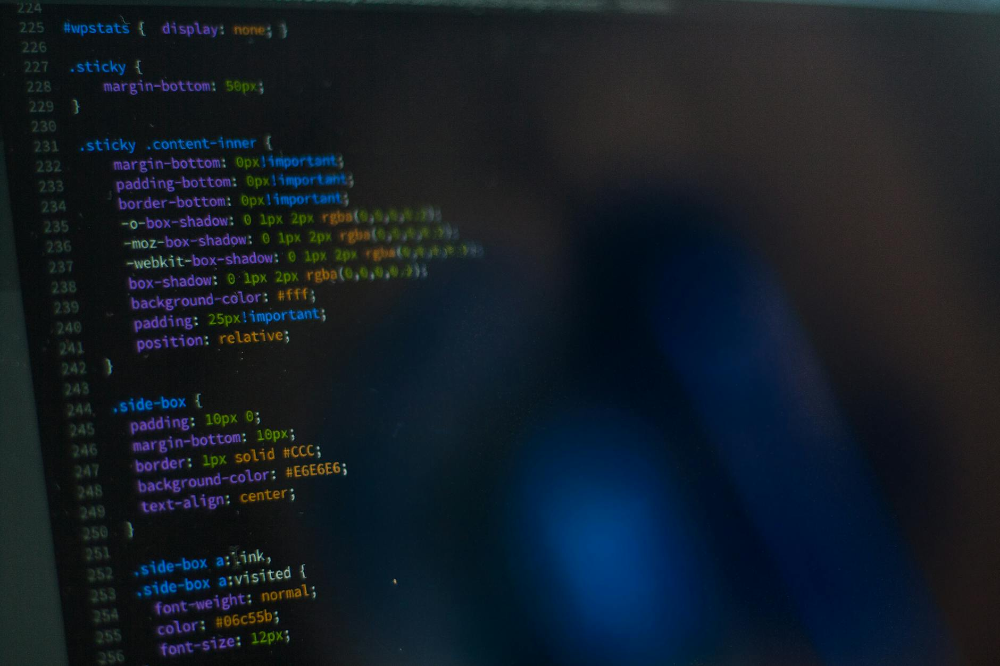
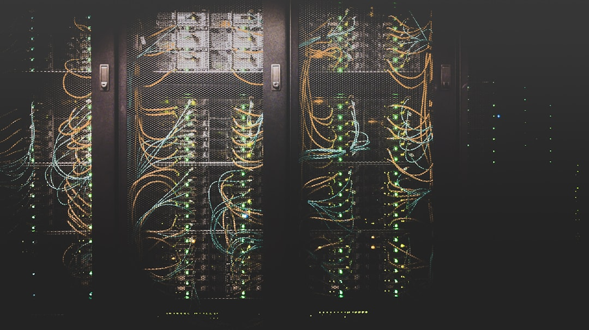
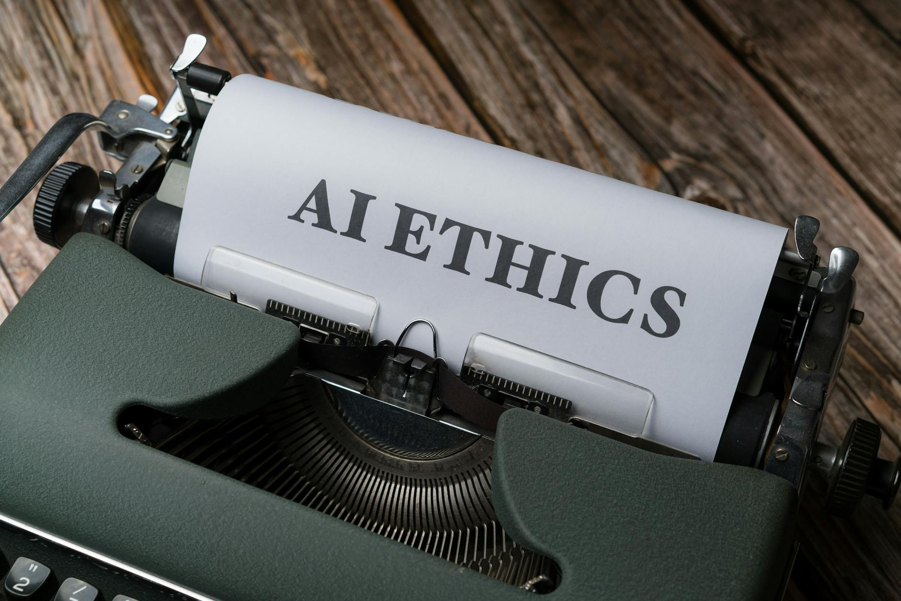
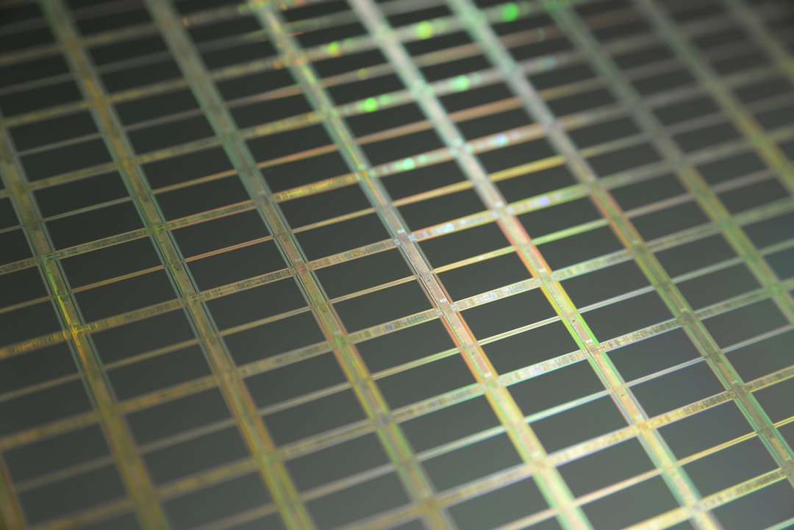
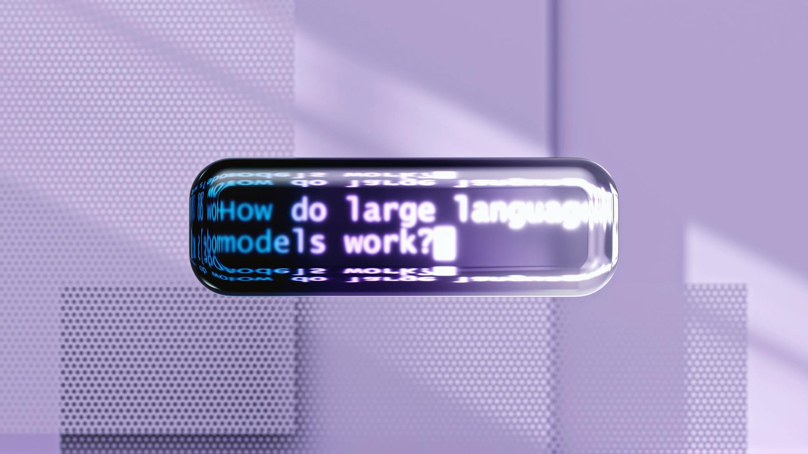
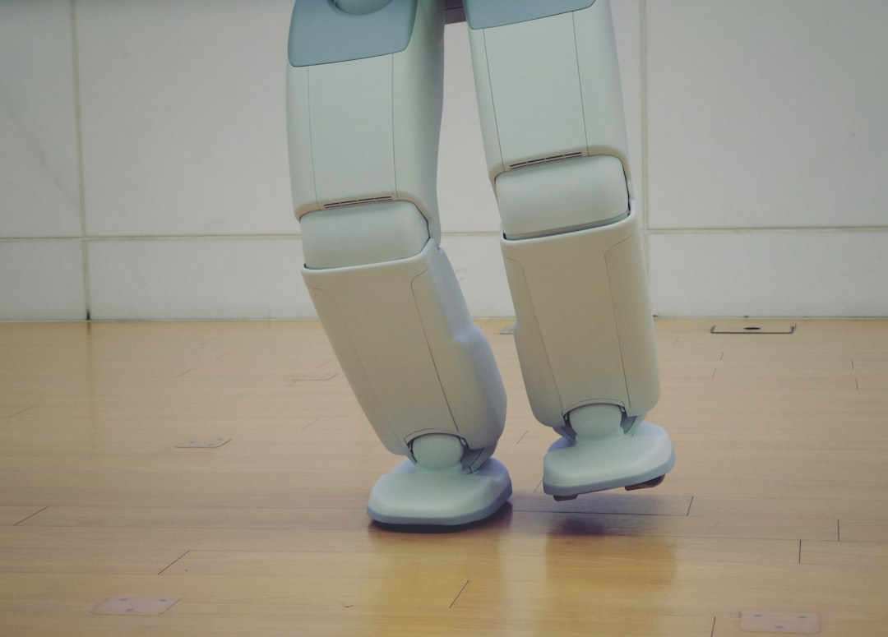

AI DAILY
AI 行业日报
2026年3月25日 · 精选 10 条
01观点评论
黄仁勋GTC宣布：Token就是新石油

「Token就是新的大宗商品。」黄仁勋在GTC 2026上说完这句话，台下安静了几秒。他把AI的发展拆成四个阶段：感知、生成、代理、物理。英伟达给出的业绩指引是——到2027年，AI芯片营收至少1万亿美元。
发布会上最大的惊喜是OpenClaw。黄仁勋把它比作Linux，一个开源的Agent操作系统。Vera Rubin平台同步亮相，推理算力是Blackwell的5倍，每token成本降到十分之一。
INSIGHT
一个做芯片的朋友看完说，1万亿的指引太夸张了。不过仔细想想，Token工厂的逻辑和炼油厂一样——谁控制产能，谁定价。英伟达现在两头都占着。
02产品发布
Claude能操控你的Mac了

Anthropic上线了Claude Cowork的电脑控制功能。打开之后，Claude可以自己操作你的Mac——开应用、填表格、跑浏览器，不需要任何配置。目前仅限Pro和Max用户，macOS平台。
配合上周发布的Dispatch，用户可以在iPhone上给Claude派任务，回到电脑前工作已经做完了。Anthropic说每次访问新应用都会弹窗请求权限，Windows版还在开发中。
INSIGHT
做RPA的朋友可能要紧张了。以前自动化要写脚本、调API。现在Claude直接看屏幕点鼠标。只是，让AI碰你的文件系统，胆子得够大。
03市场数据
中国日均Token调用量破140万亿

140万亿。国家数据局局长刘烈宏在国新办发布会上公布了这个数字。中国日均Token调用量，两年涨了1000倍。2024年初还是千亿级别，现在是百万亿。
刘烈宏用了一个新词——词元。这是Token的官方中文名。他说AI已经从对话阶段进入执行阶段，智能体正在接管越来越多的实际业务。
INSIGHT
1000倍增长听着吓人。做推理服务的人说，里面大量是空跑的测试调用。真正产生收入的调用占多少，没人讲。这个数字更像是军备竞赛的弹药计数。
04人事变动
腾讯高薪挖角字节Seed团队
腾讯在挖人。目标是字节跳动的Seed团队，也就是做大模型的核心班底。据36氪报道，腾讯开出了双倍薪资，已经成功挖走了一批重要研究员。
字节的应对方式是发期权。Seed团队启动了大规模股权激励计划，试图留住核心技术骨干。博士应届生的薪资也被腾讯拉高到行业标准的1.5倍。
INSIGHT
混元大模型追得急，用钱砸是最快的办法。不过做大模型的人都知道，核心不是单个研究员，是整个训练基建和数据管线。人挖过来，基建搬不走。
05市场数据
小米今年AI投入超160亿

雷军放了个数字：2026年小米在AI领域的研发和资本投入超过160亿元。未来三年合计超过600亿。
同时发布了三款自研大模型。MiMo-V2-Pro在Artificial Analysis全球排行第8，品牌排名第5。雷军说，小米AI的进展比外界看到的快得多。
INSIGHT
160亿看着多，拆开看——研发加资本投入。真正花在模型训练上的可能只是一部分。小米的打法一直是把AI塞进手机和IoT设备里，不走通用大模型路线。这个钱花对了地方。
06观点评论
Hinton警告：科技公司在拿安全换利润

「驱动研究的是短期利润。」Hinton最近接受采访时直接点名了大科技公司。他说这些公司正在游说削减AI监管，「现有的监管已经很少了，他们还想更少。」
Hinton建议AI公司把三分之一的算力用于安全研究。目前实际投入远低于这个比例。他还预测AI将造成大规模失业——「富人用AI替代工人，利润暴涨，大多数人变穷。」
INSIGHT
做安全研究的人私下说，团队预算年年被砍。三分之一算力？现在大部分公司连3%都没到。Hinton讲的都对，但讲了两年了，没人听。
07技术突破
阿里达摩院发布RISC-V旗舰CPU玄铁C950

全球性能最高的RISC-V处理器来了。阿里达摩院在上海发布玄铁C950，5nm工艺，主频3.2GHz，综合性能是上一代C920的3倍以上。
关键突破在AI能力。C950首次原生支持千亿参数大模型推理，能跑Qwen3-235B和DeepSeek V3-671B。达摩院同步发布了两款RISC-V原生AI加速引擎。
INSIGHT
倪光南说RISC-V正从备选走向主流。能跑671B模型是个硬指标。不过RISC-V的生态短板还在——编译器、驱动、软件栈都比ARM差一截。性能到了，生态没到。
08行业动态
Token有了官方中文名：词元

争了一年多的事，定了。国家数据局在中国发展高层论坛上宣布，Token的官方中文名是词元。之前业内提过「模元」「智元」，最终选了最贴近技术本义的一个。
「词元」强调的是AI理解语言的最小单位。腾讯研究院提过「模元」，王小川等人推荐过「智元」。官方选「词元」，倾向于技术基础而非商业叙事。
INSIGHT
一个搞NLP的朋友说，叫什么都行，反正代码里还是写token。不过官方定名这件事本身说明，AI术语开始进入行政体系了。下一步可能是统计口径和税收分类。
09市场数据
商汤2025年收入破50亿，亏损收窄六成
商汤交了一份还不错的成绩单。2025年全年收入超50亿元，同比增长33%，创历史新高。净亏损收窄58.6%。
生成式AI是主要增长引擎，收入占比约64%。小浣熊家族累计服务1500万个人用户，月活涨了7倍。下半年经营性现金流首次转正。
INSIGHT
亏损收窄六成，现金流转正。做AI的公司能讲出这个数据的不多。不过50亿收入对应现在的市值，市场显然在赌生成式AI的后续爆发。赌不赌得到，看今年下半年。
10技术突破
西湖大学发布机器人「通用小脑」GAE

机器人领域的第一个动作泛化大模型。西湖大学发布了GAE——相当于给机器人装了一个「通用小脑」。一个人通过动作捕捉，就能同时控制成百上千台不同型号的机器人。
GAE的核心能力是跨形态泛化。不同结构、不同尺寸的机器人都能用同一个模型。用户不需要编程，穿上动捕设备就能让机器人跟着做动作。
INSIGHT
ChatGPT做语言泛化，Sora做视觉泛化，GAE做动作泛化。听着很漂亮。不过从实验室到工厂车间，中间还隔着延迟、精度和安全认证。demo和量产是两回事。
今天这10条里，你觉得哪条对行业影响最大？评论区聊聊。
由 Zayen知览 整理 · 构建者视角